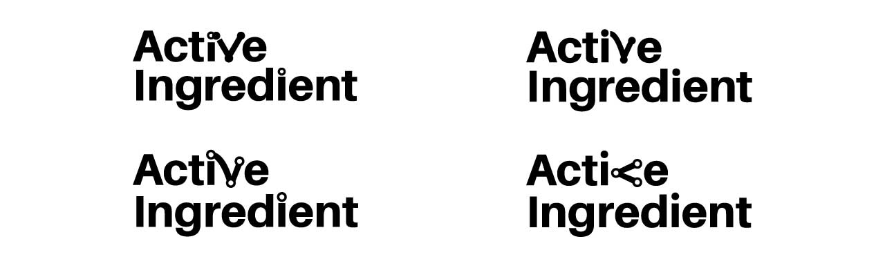
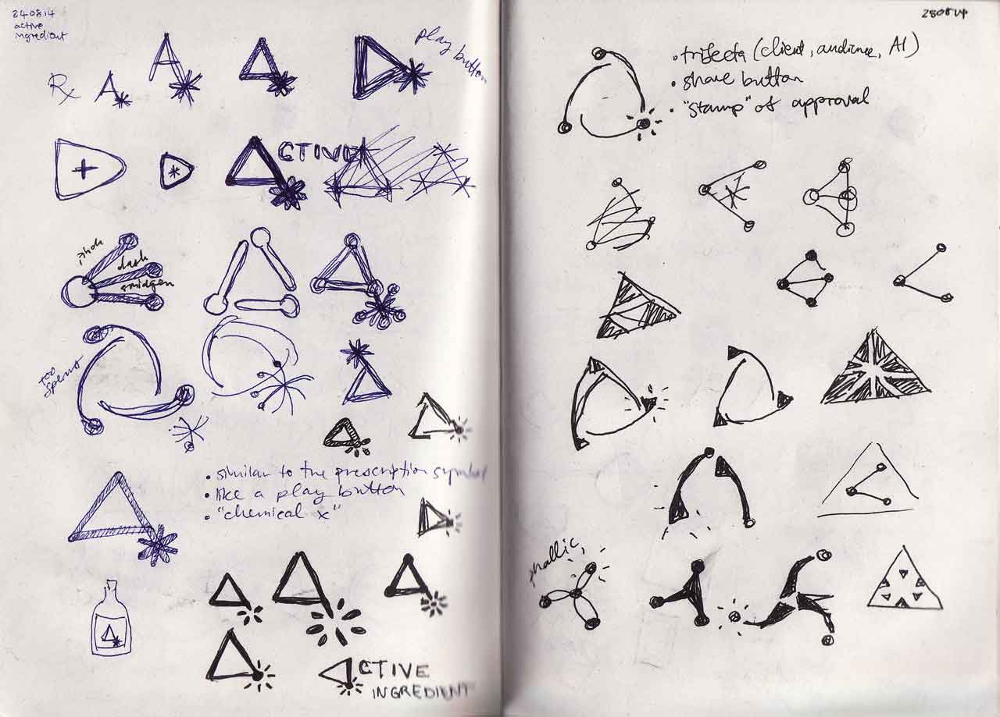
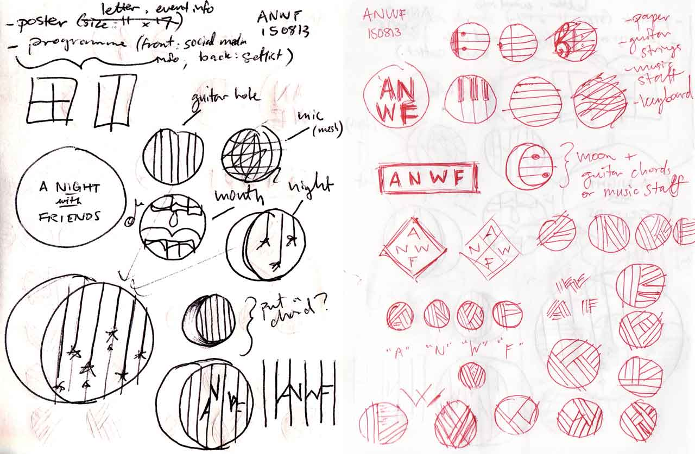
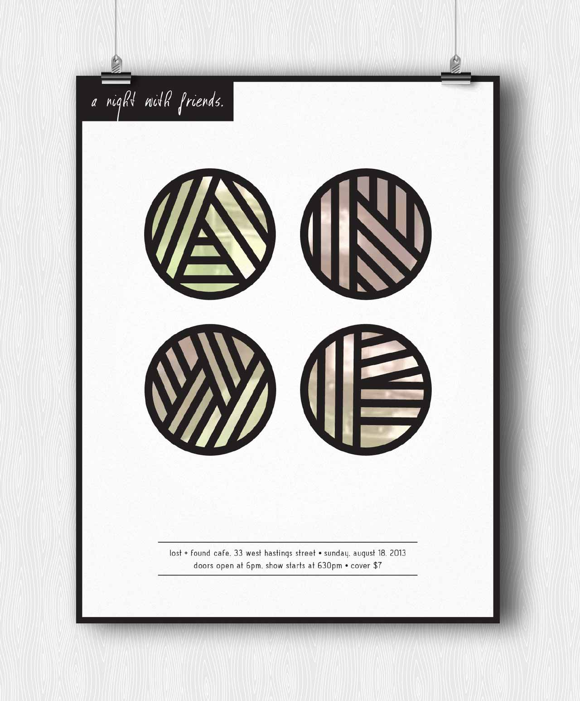
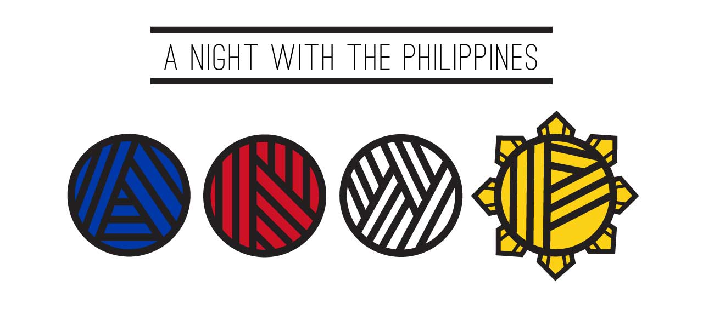
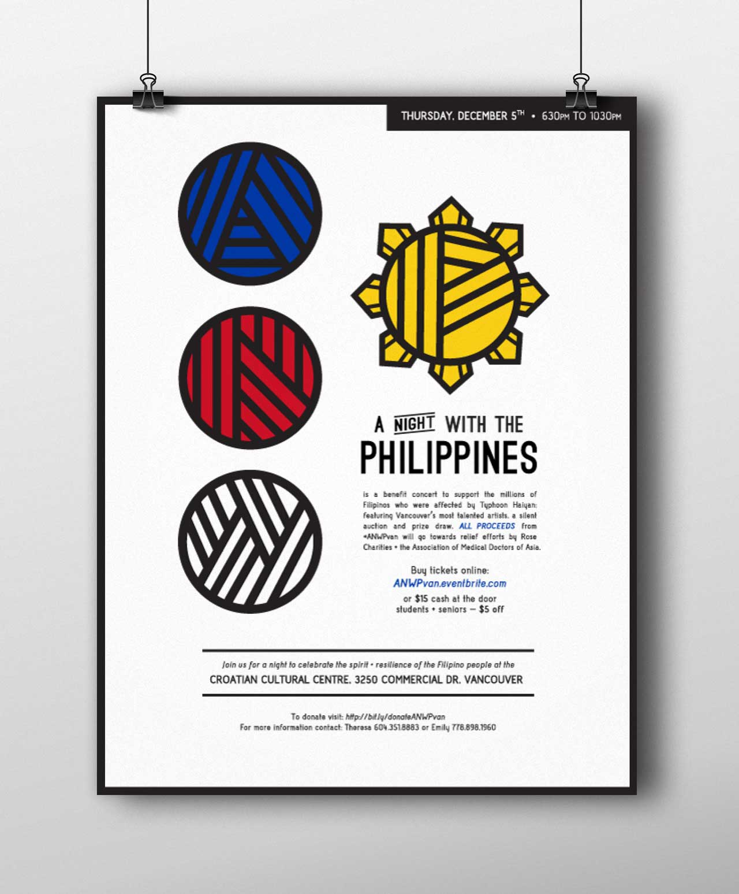

Shift + Craft is a life-coaching service started by Francis Arevalo. The abstraction of a chess board and symbols represent his approaches to help realign his clients pertaining to convergence + divergence, making connections, and conflict mitigation.
Active Ingredient is a creative agency based in Vancouver that specializes in internet-ready ads and promotional videos. Working with founders, Jeremy Mamisao and Julian Giordano, we explored the possibilities for logos and wordmarks. The final result is playful combination of the share icon, the video play button and chemistry.
Playing with the existing typeface that the company chose, we played around with various letters to bring out movement and activity. Turns out we were working with the wrong letter the whole time.
The final result stems from digging deep into the subject of chemistry on catalytic properties– for instance, how certain spices can forever alter the flavours of a meal. Although I have several pages of sketches, the ones above show the point of my process that resembles closely to the final wordmark.
Epicentr is the first and only student-run social media agency in Vancouver. Based on the name I created a geometric wordmark with subtle yet effective colour and imagery for emphasis.
A Night With Friends (ANWF) is an indie slam poetry and music event founded and hosted by Francis Arevalo. In 2013, the third annual installment was held at the Lost + Found Cafe and I was asked to rebrand it.
Chicken-scratched lyrics on lined paper, stringed instruments, rhythmic scores on sheets of music, and piano keys are just some of the weapons of choice of the performers who entertain year after year at 'A Night With Friends'. These were also the inspirations for its logo design.
The poster I made for the event was well-received. We printed about 50, and each one managed to find a home.
A Night With The Philippines (ANWP) is a sub-brand of 'A Night With Friends' for a UBC fundraising event that helped those who were affected by Typhoon Haiyan.
I combined the visual language of the thick strokes of 'A Night With Friends' with the colours and imagery of The Philippines flag, so that when passers-by see the poster, they could immediately understand what it's all about.